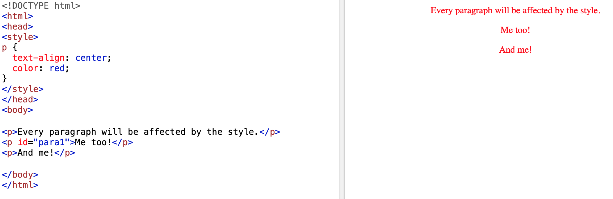
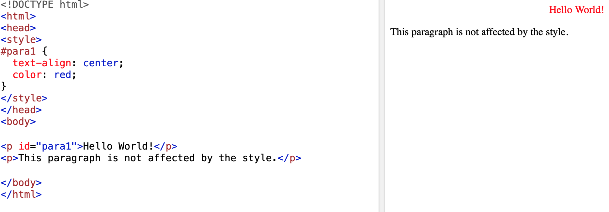
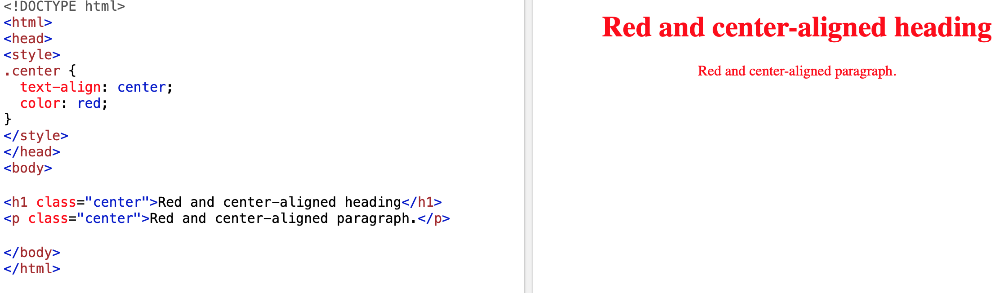
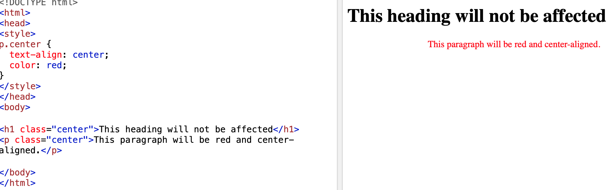
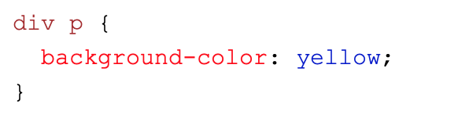
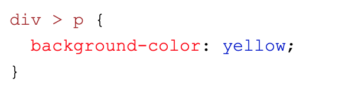

Selectors & visual rules
Opdracht 3.
Je kan op drie manieren verwijzen naar een selector:
- Je kan verwijzen naar het html element, zoals <p>.
Het voordeel is dat je alle content binnen die tag kunt aanpassen.
- Je kan ook verwijzen naar het attribute, zoals p, blockquote.
Het voordeel hiervan is dat je een onderdeel binnen je element kunt aanpassen.
- Of naar de class middels een . of naar het ID.
Het voordeel hiervan is dat je specifiek verwijst naar de class of het id.
Hiermee pas je een specifiek onderdeel aan, waar je aan refereerd.
Hieronder volgen shots van diverse voorbeelden hoe je de selectors toe kan passen.
Type: (p, div, h1 etc)

Id: (#)

Class: (.)

Type + class: (p, div, h1 etc + .)

Descendant: (p binnen div)

Child: (p direct onder div)
